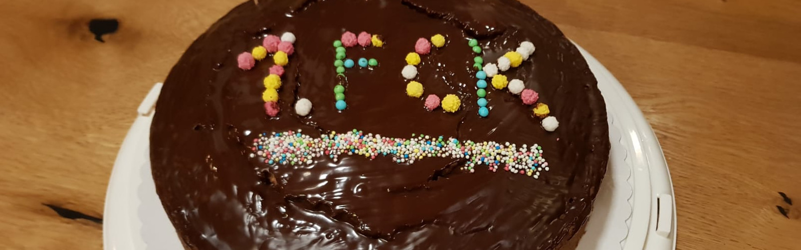
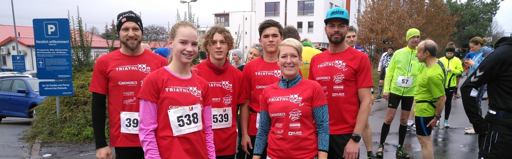

Das 1. FC Kaiserslautern Triathlon Team bietet zahlreiche Trainingsmöglichkeiten für Jugendliche und Kinder (ab 10 Jahren, jüngere Kinder auf Anfrage) an. Da ist sicher was für jeden dabei! Ob Radfahren (MTB), Laufen, Schwimmen oder alles zusammen – welche Trainingsmöglichkeiten genutzt werden hängt von euren Interessen und eurer Zeit ab. Mal reinschnuppern? Interessenten melden sich beim Jugendwart Chris unter: jugend@fck-triathlon.de
| Tag | Trainingszeit | Training | Trainingsstätte | Trainer |
|---|---|---|---|---|
| Montag | 17:00-18:00 Uhr | Schwimmen | Warmfreibad | Steffen |
| Mittwoch | 18:00-19:00 Uhr | Laufen | Schulzentrum Süd | Chris |
| Donnerstag | 18:00-19:00 Uhr | Schwimmen | Warmfreibad | Steffen |
| Freitag | 15:30-17:00 Uhr | MTB / RR | Uni-Sporthalle | Chris |
| Tag | Trainingszeit | Training | Trainingsstätte | Trainer |
|---|---|---|---|---|
| Mittwoch | 18:00-19:00 Uhr | Laufen / Athletik | Uni (Sommerhaus) | Chris |
| Donnerstag | 17:00-17:45 Uhr | Schwimmen | Schulzentrum Süd | Steffen |
| Freitag | 15:30-17:00 Uhr | MTB | Uni-Sporthalle | Chris |
Über den Winter gibt es einen Anfängerschwimmkurs für Jugendliche in kleinen Gruppen, sofern genug Interessenten zusammenkommen. Bei Interesse Anfragen an Chris.
Das Vereinstraining baut auf den Schwimmkurs im Anschluss auf.

Im Herbst findet ein MTB-Kurs für Kinder und Jugendliche ab 10 Jahren statt. Interessenten wenden sich an Chris.